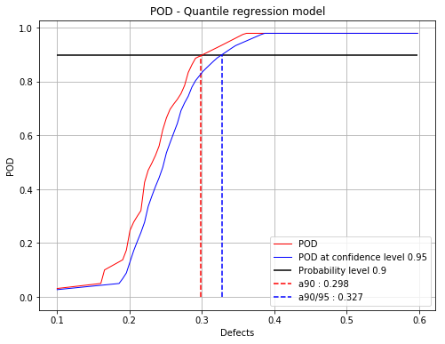

Quantile Regression POD¶
In [1]:
# import relevant module
import openturns as ot
import otpod
# enable display figure in notebook
try:
%matplotlib inline
except:
pass
from time import time
Generate data¶
In [2]:
N = 100
ot.RandomGenerator.SetSeed(123456)
defectDist = ot.Uniform(0.1, 0.6)
# normal epsilon distribution
epsilon = ot.Normal(0, 1.9)
defects = defectDist.getSample(N)
signalsInvBoxCox = defects * 43. + epsilon.getSample(N) + 2.5
# Inverse Box Cox transformation
invBoxCox = ot.InverseBoxCoxTransform(0.3)
signals = invBoxCox(signalsInvBoxCox)
Build POD with quantile regression technique¶
In [3]:
# signal detection threshold
detection = 200.
# The POD with censored data actually builds a POD only on filtered data.
# A warning is diplayed in this case.
POD = otpod.QuantileRegressionPOD(defects, signals, detection,
noiseThres=60., saturationThres=1700.,
boxCox=True)
Quantile user-defined¶
In [4]:
# Default quantile values
print('Default quantile : ')
print(POD.getQuantile())
# Defining user quantile, they must range between 0 and 1.
POD.setQuantile([0.1, 0.3, 0.5, 0.7, 0.8, 0.85, 0.9, 0.95])
print('User-defined quantile : ')
print(POD.getQuantile())
Default quantile :
[ 0.05 0.0965 0.143 0.1895 0.236 0.2825 0.329 0.3755 0.422
0.4685 0.515 0.5615 0.608 0.6545 0.701 0.7475 0.794 0.8405
0.887 0.9335 0.98 ]
User-defined quantile :
[ 0.1 0.3 0.5 0.7 0.8 0.85 0.9 0.95]
Running quantile regression POD¶
In [5]:
# Due to the bootstrap technique used to compute the confidence
# interval, the run takes few minutes.
# A progress bar is displayed (can be removed using setVerbose(False))
t0 = time()
POD = otpod.QuantileRegressionPOD(defects, signals, detection,
boxCox=True)
POD.run()
print('Computing time : {:0.2f} s'.format(time()-t0))
Computing defect quantile: [==================================================] 100.00% Done
Computing time : 162.13 s
The computing time can be reduced by setting the simulation size attribute to another value. However the confidence interval is less accurate.
The number of quantile values can also be reduced to save time.
In [6]:
t0 = time()
PODsimulSize100 = otpod.QuantileRegressionPOD(defects, signals, detection,
boxCox=True)
PODsimulSize100.setSimulationSize(100) # default is 1000
PODsimulSize100.run()
print('Computing time : {:0.2f} s'.format(time()-t0))
Computing defect quantile: [==================================================] 100.00% Done
Computing time : 16.17 s
Compute detection size¶
In [7]:
# Detection size at probability level 0.9
# and confidence level 0.95
print(POD.computeDetectionSize(0.9, 0.95))
# probability level 0.95 with confidence level 0.99
print(POD.computeDetectionSize(0.95, 0.99))
[a90 : 0.298115, a90/95 : 0.328775]
[a95 : 0.331931, a95/99 : 0.372112]
get POD NumericalMathFunction¶
In [8]:
# get the POD model
PODmodel = POD.getPODModel()
# get the POD model at the given confidence level
PODmodelCl95 = POD.getPODCLModel(0.95)
# compute the probability of detection for a given defect value
print('POD : {:0.3f}'.format(PODmodel([0.3])[0]))
print('POD at level 0.95 : {:0.3f}'.format(PODmodelCl95([0.3])[0]))
POD : 0.899
POD at level 0.95 : 0.832
Compute the pseudo R2 for a given quantile¶
In [9]:
print('Pseudo R2 for quantile 0.9 : {:0.3f}'.format(POD.getR2(0.9)))
print('Pseudo R2 for quantile 0.95 : {:0.3f}'.format(POD.getR2(0.95)))
Pseudo R2 for quantile 0.9 : 0.675
Pseudo R2 for quantile 0.95 : 0.656
Show POD graphs¶
Mean POD and POD at confidence level with the detection size for a given probability level¶
In [10]:
fig, ax = POD.drawPOD(probabilityLevel=0.9, confidenceLevel=0.95,
name='figure/PODQuantReg.png')
# The figure is saved in PODQuantReg.png
fig.show()
/home/dumas/anaconda2/lib/python2.7/site-packages/matplotlib/figure.py:397: UserWarning: matplotlib is currently using a non-GUI backend, so cannot show the figure
"matplotlib is currently using a non-GUI backend, "

Show the linear regression model at the given quantile¶
In [11]:
fig, ax = POD.drawLinearModel(0.9)
fig.show()